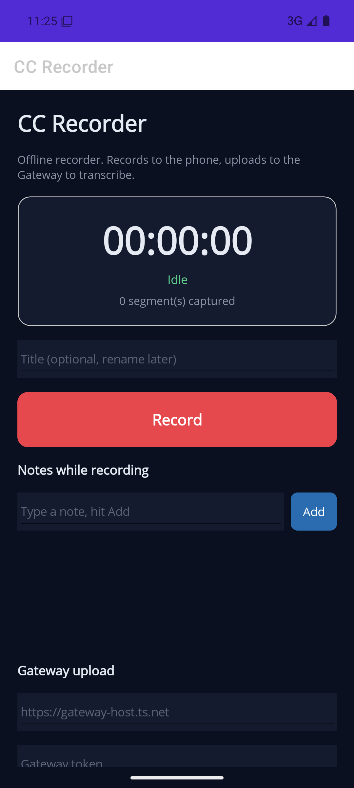
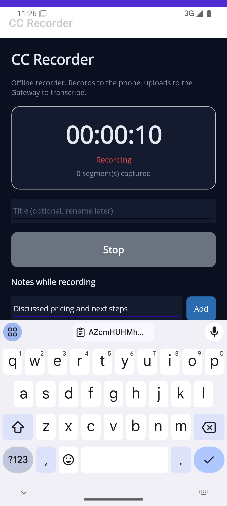
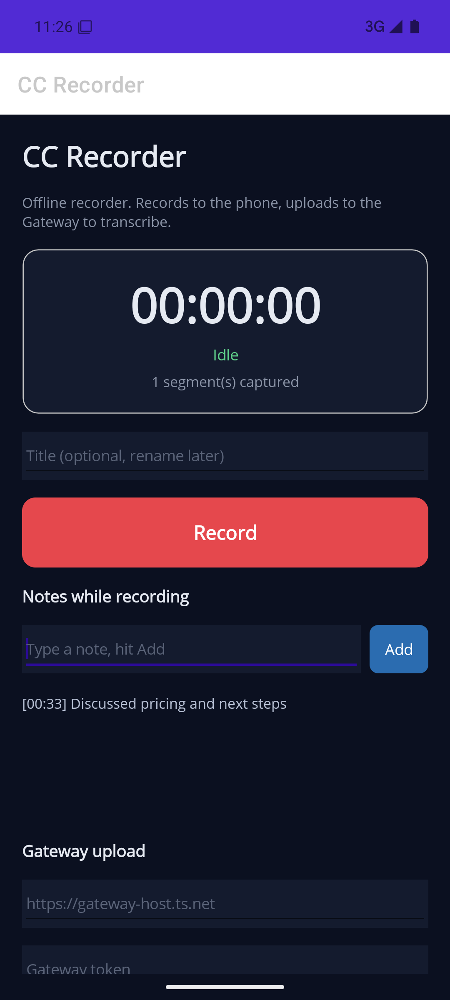

Otter replacement · offline Android recorder + server-side transcription into the vault · implementation report, 2026-05-23
Server pipeline: built & tested Android app: built, booted, recording verified End-to-end: real audio → vault 3 human checks remain
A standalone Android app records audio fully offline into crash-safe rolling segments, then uploads them to the always-on CC Director Gateway, which transcribes each segment through the existing dictation pipeline, cleans it with your company-term glossary, and files the result into a dedicated vault transcripts collection. The phone stays a dumb, reliable recorder; all the heavy lifting is server-side.
Built with .NET MAUI, deployed to a freshly-provisioned Android 35 emulator, and driven through a real record cycle.



The emulator microphone records silence (no host audio source), but the capture, segment finalization, note timestamping, and manifest writing are all real — see the manifest below.
Pulled straight off the device after the record cycle above. A finalized 36-second AAC segment plus a manifest carrying the segment hash and the timestamped note:
{
"RecordingId": "f753d93cba514596aa5fa8d9d71aab5e",
"Title": "Recording 2026-05-23 11:25",
"DeviceId": "sdk_gphone64_x86_64",
"StartedAt": "2026-05-23T15:25:53Z", "EndedAt": "2026-05-23T15:26:30Z",
"SampleRateHz": 16000, "Channels": 1, "Codec": "aac-m4a",
"Chunks": [
{ "Index": 0, "File": "0000.m4a", "StartMs": 466, "DurationMs": 36248,
"Bytes": 292000, "Sha256": "0d6be2e21811c1c7b4ec5eec133a1478d1de134db8339e9965822e21e165d7ef" }
],
"Notes": [ { "TMs": 33350, "Text": "Discussed pricing and next steps" } ]
}
The full HTTP loop was exercised end to end against the new Gateway ingest endpoints, injecting the three
Phase 0 speech clips as segments. Real OpenAI transcription, real glossary cleanup, real vault filing.
The cleanup pass even repaired the raw speech-to-text ConTUI → ConPTY and
Mindzie → mindzie from your vocabulary. The transcript landed as
vault document #476, type transcript, with the audio stored beside it.
# Phase0 Injected Call (E2E) - Recorded: 2026-05-23T09:00:00Z - Segments: 3 - Duration: 03:00 ## Notes - [00:01] injected audio test ## Transcript I sent the cc-director patch to mindzie before the CenCon review. Soren Frederiksen needs the Avalonia changes for ConPTY tested by Friday. Tell mindzie that the CenCon report is ready and ping the cc-director gateway team.
ID Title Type Tags
476 Phase0 Injected Call transcript transcript,
(E2E) recording
vault/transcripts/e2e-7d5844db/ Phase0 Injected Call (E2E).md 0000.mp3 0001.mp3 0002.mp3
| File | Role |
|---|---|
| Gateway.Contracts/RecordingManifest.cs | Wire DTOs (manifest, chunk, note, status) |
| Core/Recording/RecordingIngestService.cs | Ingest state machine: store, transcribe, assemble, clean, file |
| Core/Recording/OpenAiRecordingTranscriber.cs | Reuses OpenAiTranscriptionProvider + CleanupOrchestrator |
| Core/Recording/CcVaultFiler.cs | Files via the cc-vault CLI into a dedicated library |
| Gateway/Api/RecordingEndpoints.cs | The 4 /ingest/recording REST routes |
| File | Role |
|---|---|
| phone/CcRecorder/MainPage.xaml(.cs) | Recorder UI: record, timer, notes, upload, library |
| Platforms/Android/AndroidAudioRecorder.cs | 1-min AAC segment rotation, manifest, SHA-256 |
| Platforms/Android/RecorderForegroundService.cs | Foreground service: survives screen lock / background |
| Recording/IngestUploader.cs | Resumable, idempotent upload to the Gateway |
| Recording/LocalManifest.cs | On-device manifest model |
| Decision | Choice |
|---|---|
| Segment length | 1 minute (max crash safety; each well under the 25 MB transcription limit) |
| Vault destination | Dedicated transcripts library + typed --type transcript document |
| Audio retention | Original audio stored inside the vault collection (travels with backups) |
| Title flow | Record instantly with a timestamp default; rename later |
| Distribution | Sideloaded signed APK |
| Transcription | Reuses the existing dictation pipeline — no second STT path |
| Suite | Result | What it covers |
|---|---|---|
| RecordingIngestServiceTests (Core) | 10 passed | register/idempotency, chunk store, SHA mismatch, assemble+clean+file, vault-failure error state, and a real-audio end-to-end (Phase 0 clips) |
| RecordingEndpointsE2ETests (HTTP) | 1 passed | full wire flow over HTTP incl. idempotent re-PUT, real transcription, real vault filing (opt-in: CC_REC_E2E=1) |
Real-network tests self-skip without OPENAI_API_KEY, matching the existing dictation tests. Both ran green against the live OpenAI API.
Everything that can be verified headless has been. These three need your real phone — they cannot be done in an emulator or unattended.
# Build a self-contained debug APK (assemblies embedded, installable standalone) dotnet build phone/CcRecorder/CcRecorder.csproj -f net10.0-android -p:EmbedAssembliesIntoApk=true # Install on a connected device/emulator adb install -r phone/CcRecorder/bin/Debug/net10.0-android/com.ccdirector.recorder-Signed.apk
APK id com.ccdirector.recorder. For distribution, build -c Release with a signing keystore.
The /ingest/recording routes are mapped into the Gateway automatically. To run the real
end-to-end test that files into the vault:
setx OPENAI_API_KEY ... # already set on this machine $env:CC_REC_E2E = "1" dotnet test src/CcDirector.Gateway.Tests --filter RecordingEndpointsE2ETests
%LOCALAPPDATA%\Android\Sdk), platform-tools, the emulator, and an Android 35 system image. ANDROID_HOME now points there.complete. The chunked
design makes this a drop-in later.
Plan of record: docs/plans/phone-recorder-otter-replacement.md ·
Generated by Claude Code, 2026-05-23.